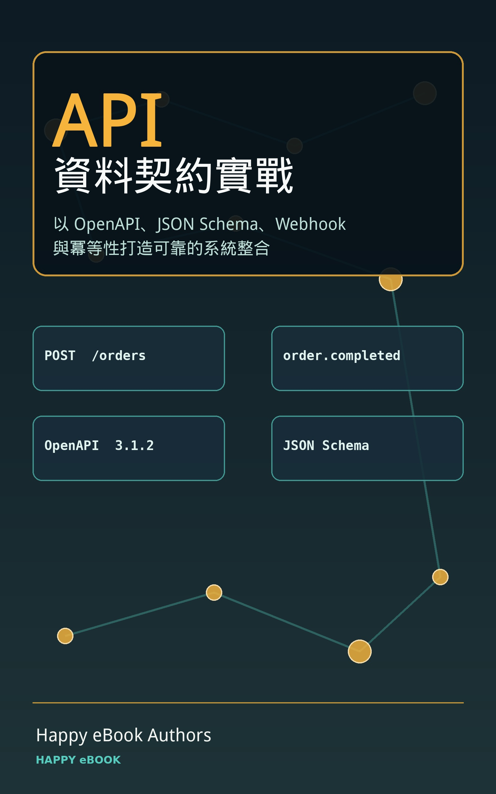

電子書
API 資料契約實戰
以 OpenAPI、JSON Schema、Webhook 與冪等性打造可靠的系統整合

API 資料契約實戰
以 OpenAPI、JSON Schema、Webhook 與冪等性打造可靠的系統整合
API 回傳 200，不代表整合可靠。本書以「晴日商店訂單 API 與合作夥伴 Webhook」為連續案例，帶你實作 OpenAPI 3.1.2、JSON Schema Draft 2020-12、cursor 分頁、逾時與有限重試、冪等鍵、Webhook HMAC 簽章、事件去重及 breaking-change gate。所有核心實驗均在 localhost 執行，適合具備基本 Python 能力、第一次系統化學習 API 契約的讀者。